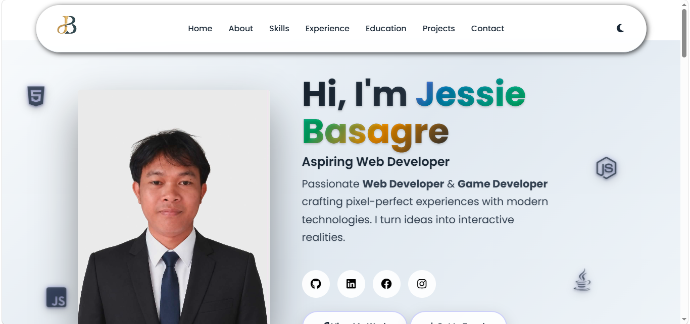

My professional journey and hands-on experiences
Completed work immersion training at the Department of Agriculture, San Agustin, Pili, Camarines Sur. Gained practical experience in payroll processing, data management, and government office administration.
Managed daily operations of family-owned construction supply business specializing in sand and gravel. Handled customer service, inventory management, sales transactions, and business coordination.

Designed and developed this modern, responsive portfolio website showcasing web development skills. Features dark/light mode, smooth animations, contact form integration, and mobile-first design.